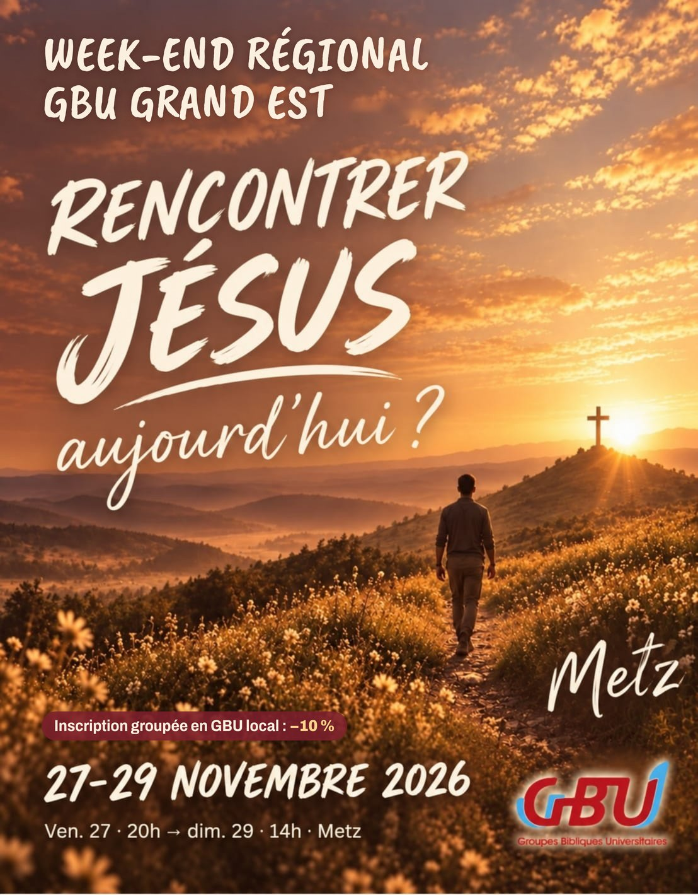

Orateurs et intervenants
RencontrerJésusaujourd’hui ?
Merci de venir servir pendant le week-end GBU Grand Est, du 27 au 29 novembre à Metz. Dis-nous quand tu seras là, pour qu'on prévoie tes repas et, si besoin, ton logement. Tu n'as rien à payer.

Les moments du week-end
- Vendredi soirAccueil dès 18h, programme de 20h à 22hJeux, louange, témoignage, présentation du thème
- Samedi matinLouange, puis Message 1 « Viens et vois » en DAB (10h15–11h30)Présentation des ateliers à 11h30, repas à 12h15
- Samedi après-midiGrand jeu, quatre-heures, puis sketch et Message 2 « Suis-moi » de 16h30 à 17h30Ateliers au choix de 17h45 à 18h50
- Samedi soirDîner à 19h15, témoignage à 21h, soirée louange, témoignages et prière de 21h15 à 22h30
- DimancheCulte avec Metz Sud à 10h, Message 3 « Va et deviens » à 11h, repas à 12hFin du week-end à 14h30
Infos pratiques
- Vendredi et samediÉglise évangélique de Borny, 28 rue Le Goullon, MetzMettis B depuis la gare (15 min).
- DimancheFJT Queuleu (Etap'Habitat), 2 rue Georges Ducrocq, Metz10 min à pied de la gare.
- RepasOfferts pour les moments où tu es làIndique tes allergies ou ton régime dans le formulaire.
- LogementChez l'habitant si tu n'as pas de logement sur Metz
- MatérielProjecteur, micro, tableau… dis-nous ce qu'il te faut dans le formulaire
Je remplis le formulaire
Tu viens comme participant ? C'est par ici.